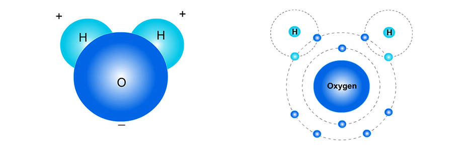
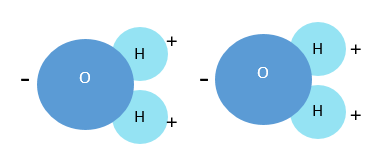
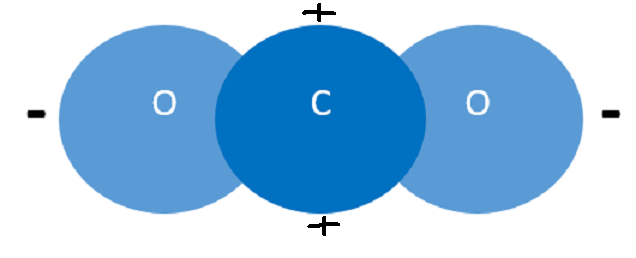

Molecules
What are Molecules? Atoms
can be attracted to other atoms. When this happens, they form groups of atoms called molecules.
Molecules are two or more atoms that are bonded together through some attractive force (often,
the electric
force).
Example 1: O2. Two oxygen atoms may bond together to form an O2 molecule (the "2" after the "O" means that there are two Oxygen atoms in this molecule). Below are two different ways of representing bonded Oxygen atoms that form the molecule O2. The picture on the left shows a very simple "ball" model of an oxygen molecule:

The picture above on the right shows a more detailed model. Here, the "O"s (for
"Oxygen") are shown in place of the nucleus (a simpler way to represent an "Oxygen"
atom). The electrons from the oxygen atom on the left are shown as Xs and the electrons from the oxygen atom on the right
are shown as dots. The electrons are shown along circles. The circle that each electron is associated with is not a physical "thing",
but represents the amount of energy the electron(s) on that Energy circle have.
-
Example 2: NaCl.
An atom of sodium (Na) and an atom of chlorine (Cl),
bond to make a molecule of NaCl (sodium chloride, or common table salt). In general,
the positively-charged atoms (or atoms that lose one or more electrons) are written
before the negatively-charged atoms (or atoms that gain one or more electrons in
the molecule).
Below are two ways to represent an NaCl molecule.

In the picture above on the right, the electrons are shown this time as dots on the Energy circles. Again, it is important to understand that each Energy circle represents a different amount of energy that all electrons on that circle have. The Energy circles do not show how the electrons move or orbit the nucleus.
-
Example 3: H2O. A water molecule (H2O) has two hydrogen
(H) atoms (the "2" after the "H" means there are two hydrogen atoms) and one oxygen
(O) atom. Some people think a water molecule looks like Mickey Mouse. Maybe that can help you remember its shape?

But you may notice the "+" signs above the H atoms in the picture on the left. This means that the H atoms have a more positive charge. The reason for this is that the electrons the H and O atoms share are more often in the oxygen's Energy circle than the hydrogen's Energy circle. This is because the oxygen atom has eight protons in its nucleus but each hydrogen only has one proton. So, the protons in the oxygen's nucleus pull on the electrons stronger than the hydrogens' single proton.
-
Example 4: CO2. A carbon dioxide molecule (CO2) has three atoms:
one carbon (C) atom and two oxygen (O) atoms. Do you see how there are 8 electrons that are between the carbon and each oxygen atom (there are 4 on each side of the carbon's nucleus)? These electrons are shared by the carbon and oxygen atoms.

-
Example 5: C12H22O11 (sucrose, or common table sugar).
A sugar molecule is much more complex! Sucrose, or common table sugar, has 12
carbon atoms, 22 hydrogen atoms, and 11 oxygen atoms.

The picture above to the right represents
a molecule of sucrose (C12H22O11) or "sugar". This way of representing a molecule is called a "ball and stick" model, where
the balls represent the atoms, and the black "sticks" represent bonds between particular
atoms.
It is important to understand
that bonds between atoms—represented as "sticks"
in this picture—are not material or physical objects or things with mass. Bonds
are just attractive forces
between two atoms (which do have mass), resulting from electric forces between charged
particles (electrons and protons).
(A common misconception people
have is that "energy" is "contained" or "stored" within bonds. This is false. Energy is an
abstract measurement of the motion of objects or radiation.)
Why do atoms bond to form molecules?
It
may seem a bit strange, but atoms bond with each other because they "like" it when their
outer Energy circle is full. (This
is discussed more in the unit Atoms: Electron Organization.)
Energy circles are full when
no more electrons can be in that Energy circle. Atoms are more stable when their outer
Energy circle is full.
- The first Energy circle (E1) is full when there are 2 electrons.
- The second Energy circle (E2) is full when there are 8 electrons.
- The third Energy circle (E3) is full when there are 18 electrons.
Some
bonding between atoms results from atoms having only one electron in the outer-most
Energy circle. To minimize (potential) energy, the electron may move from an Energy
circle (or energy level) in one atom to another. Atoms may also share electrons
with each other in order to fill up the outer Energy circles.
- Example 1: NaCl. An atom of Na (sodium) has only one electron in its 3rd Energy circle. So, the electron moves from the Na (sodium) atom to the Cl (chlorine) atom. This is shown in the figure below (left). This electron now orbits around the Cl atom (shown below, right). As a result of losing an electron, the Na atom becomes positively charged. And, as a result of gaining an electron (which has a negative charge), the Cl atom becomes negatively charged.

- The electric force between the positively charged Na atom (Na+) and the negatively charged Cl atom (Cl-) pulls them together. Because of this, the Na and Cl atoms are attracted to each other. We say that they are "bonded". But this just means that the atoms are attracted to each other. The result of this bonding between atoms is the NaCl (or salt) molecule.

- Example 2: H2O.
Reminder: Atoms "like" having a "full" outer Energy circle.
- The first Energy circle (E1) in an atom is full when there are 2 electrons.
- The second Energy circle (E2) in an atom is full when there are 8 electrons.
- The third Energy circle (E3) in an atom is full when there are 18 electrons.
- In H2O, Oxygen atoms have 6 electrons in their second (and outer) Energy circle. Oxygen "wants" 2 more electrons to complete that Energy circle. Each Hydrogen atom only has one electron, which is in the first Energy circle. In a water molecule (H2O), the electron from each hydrogen atom is pulled into the outer Energy circle of the Oxygen atom to complete that Energy circle. The additional electrons cause the Oxygen to become more negatively charged. Also, the Hydrogen atoms become more positively charged. Due to electric forces, the (more positively charged) hydrogen atoms and the (more negatively charged) oxygen atom are attracted to each other. As a result, the three atoms are held together, forming a water molecule.

- Electrons may move from one atom to another atom in molecules. This movement results in molecules — including salt molecules, sugar molecules, and water molecules — having areas that are more positively charged and areas that are more negatively charged. This property of molecules having ends that are oppositely charged (polarity) helps substances (like salt and sugar) dissolve in water.
Example
3: CO2. In
CO2, different atoms "share" electrons. Two
of each of the oxygen's electrons (represented as dots below) orbit both the oxygen atom
and the carbon atom. Also,
four of the carbon atom's electrons (represented as "X"s below) orbit both the oxygen and
carbon atoms. So, there is a lot of sharing of electrons in a CO2 molecule! Now,
all three atoms have two electrons in the closest Energy circle, and also 8 electrons in
the second Energy circle.

The oxygen atoms only need two
more electrons to complete their outer Energy circle. But the carbon atom needs four more electrons
to do that. So, the oxygen atoms are closer to having their second Energy circles completed. Also, oxygen atoms have 8 protons (each with a positive
charge). Carbon atoms only have 6 protons. So, electrons (which are negatively charged and
attracted to positively charged protons) tend to be pulled to the oxygen sides of the CO2
molecules.
As a result, the shared electrons spend more of their time in the oxygen atoms' Energy
circles. As a result, the oxygen ends of the CO2 molecules tend to be more negatively
charged (represented as red in Figure 1 below). The carbon in the middle tends to be more
positively charged (represented as blue in Figure 1 below).
Figure 1. Charge distribution
of Carbon dioxide molecule (red: negative charge; blue: positive charge)

For information about why atoms "take" or "share"
electrons from/with other atoms, please see the section: "How Electrons are organized in
atoms" in the Atoms Unit.
(Slightly Advanced concept: Polarity)
Polarity. When one side of a molecule has a positive charge and the opposite side has a negative
charge, the molecule is considered to be "polar." Polar molecules attract the oppositely-charged parts of other polar molecules.
Water molecules are polar molecules: the hydrogen sides are positively charged and the opposite (oxygen) sides are negatively charged. This is why they "stick" to other water molecules. (This is also why your hairs stick to each other when they are wet but not dry!)

A carbon dioxide (CO2) molecule is represented below.
